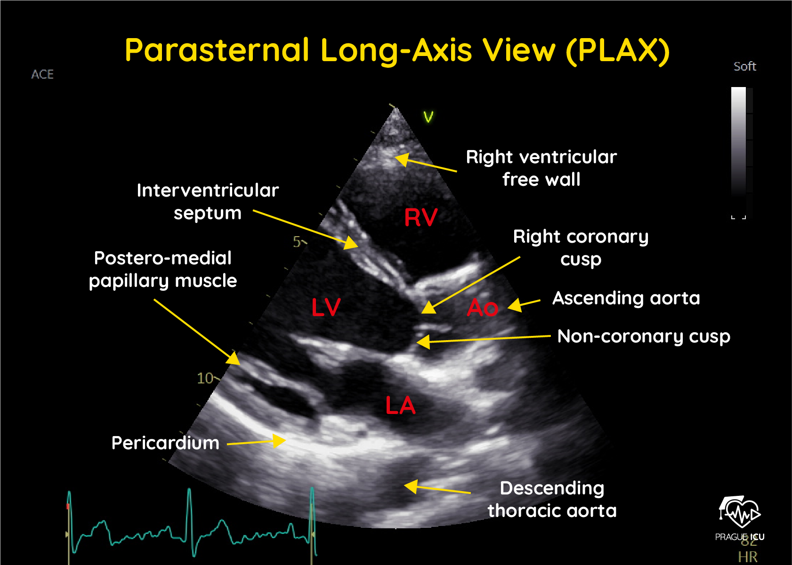
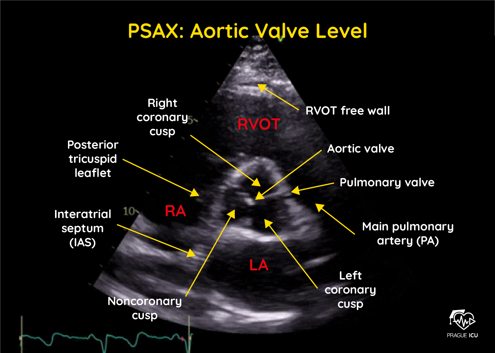
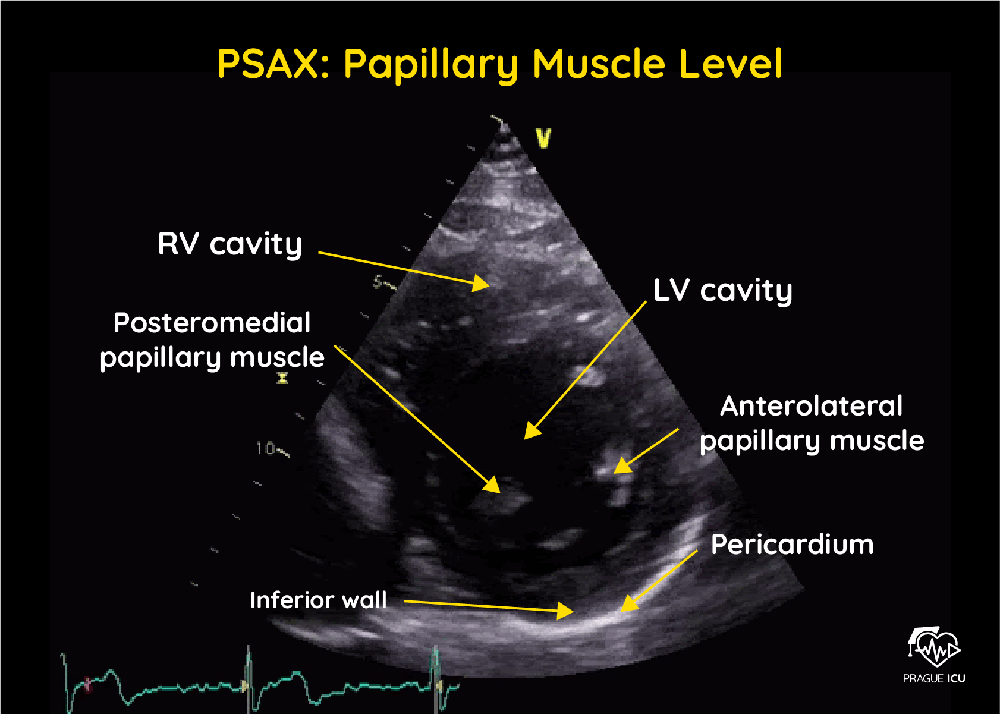
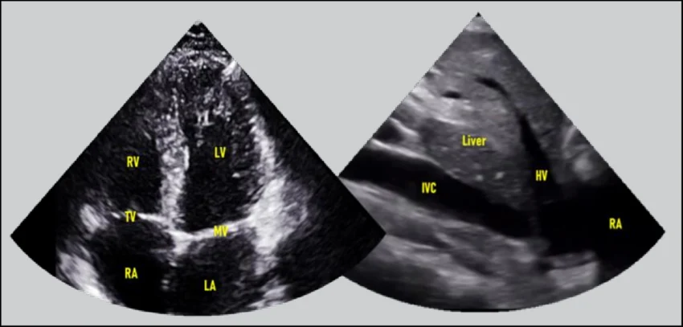
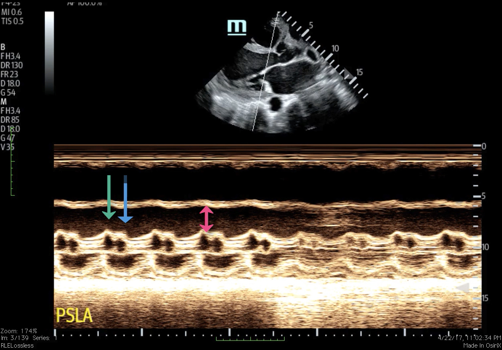
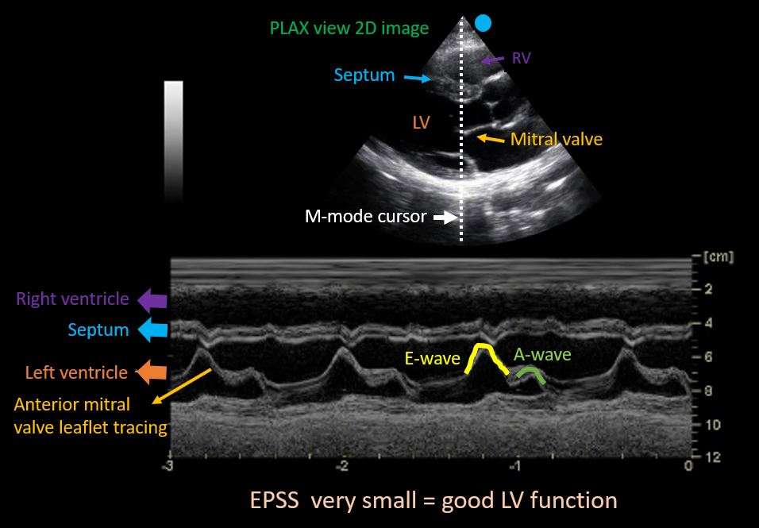
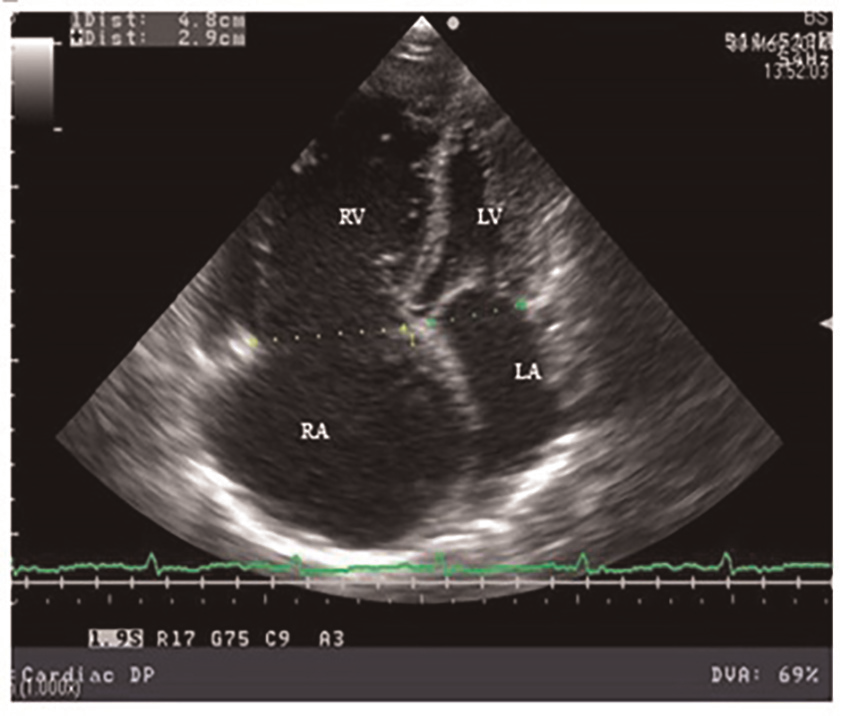
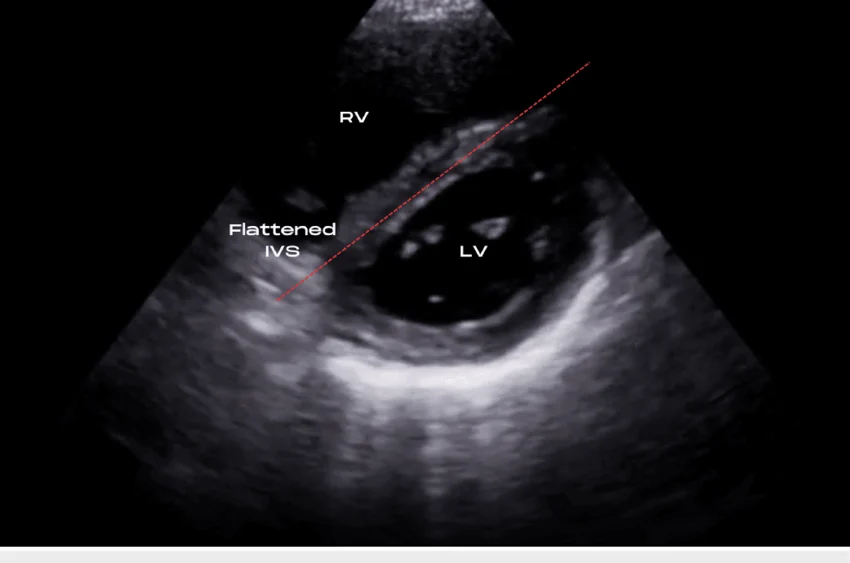
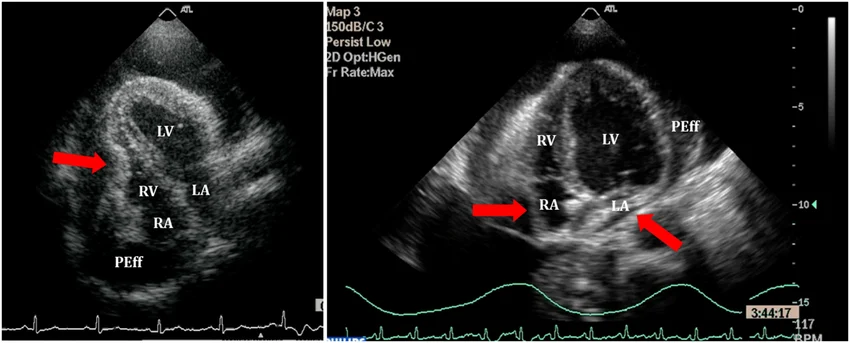
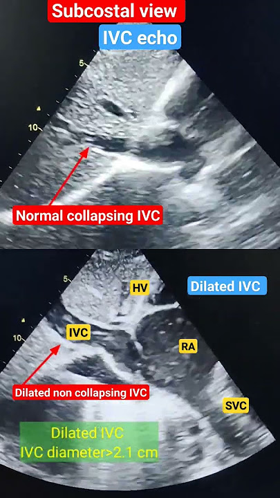

FoCUS is focused, binary, and question-driven — performed by the treating clinician. It answers specific clinical questions: Is the heart contracting normally? Is there a pericardial effusion? Is the RV dilated? It is not a substitute for comprehensive echocardiography by a trained sonographer.
Position: Left sternal border, 3rd–4th ICS. Supine or left lateral decubitus (LLD).
Marker: Right shoulder (PLAX) or left hip (PSAX). Cardiac preset — marker at top right of screen.
Views: Parasternal Long Axis (PLAX), Parasternal Short Axis (PSAX) at multiple levels.
Position: Cardiac apex, 4th–6th ICS, MCL to anterior axillary line. LLD improves window.
Marker: Toward patient’s left.
Views: A4C, A5C (adds LVOT), A2C, apical long axis.
Position: Subxiphoid, 15–20° toward heart. Patient supine, knees flexed. Press firmly below xiphoid.
Marker: Toward patient’s left. Phased array or curvilinear.
Views: SC4C, IVC long axis. Preferred during cardiac arrest and trauma — no repositioning required.
Position: Suprasternal notch. Neck extended, head turned left. Phased array required.
Views: Aortic arch, descending aorta. Important for aortic dissection assessment and AR (holodiastolic reversal).
Normal anatomy: chest wall (top), RV (anterior), IVS, LV cavity + posterior wall, anterior and posterior MV leaflets, LA, aortic valve, proximal ascending aorta. The descending aorta appears in cross-section posterior to the mitral annulus. Key reference: pericardial effusion tracks anterior to the descending aorta; left pleural effusion tracks posterior to it.
The IVS should appear horizontal. If the apex is visible or heart appears foreshortened, move one ICS higher or medially. The AV and MV should both be visible simultaneously. Posterior MV leaflet anchors to posterior wall.



In PSAX at the papillary level, the LV should appear circular. RV pressure or volume overload flattens the IVS, creating a D-shaped LV. Pressure overload: IVS flattens in systole AND diastole. Volume overload: IVS flattens in diastole only. D-sign is highly specific for RV strain.
Key assessments: LV size and function, RV:LV ratio (normal RV ≤ 2/3 LV), MV, TV, septal motion, apical pathology (thrombus, ballooning).
If LV apex appears rounded or LV appears short, the probe is too superior. Reposition more lateral/inferior. Foreshortening causes overestimation of EF and underestimates LV volumes.
SC4C is the primary view during cardiac arrest (A4C requires stopping CPR). Also optimal in obese patients, COPD, and post-cardiac surgery. Allows rapid pericardial effusion assessment.

Subcostal/subxiphoid windows are frequently superior to parasternal in infants and young children — a more horizontal cardiac axis and thinner chest wall bring the heart closer to the transducer. In a distressed or poorly cooperative infant, a single well-obtained SC4C view may substitute for a full multi-window exam.
FoCUS uses qualitative (“eyeball”) EF classification validated as accurate for experienced sonographers. The goal is binary classification for clinical decision-making, not a precise number.
EF <30%. Walls barely move, large cavity in systole, poor wall thickening.
EF 30–50%. Visible but impaired inward motion, cavity does not fully empty.
EF 50–70%. Walls move inward well, cavity substantially reduced in systole.
EF >70%. Walls near-obliterate cavity. Sepsis, hypovolemia, vasodilation.
EPSS measures distance between the anterior MV leaflet at maximal opening (E-point) and the IVS in M-mode. EPSS >7 mm = reduced EF (Sn ~80%, Sp ~88%). Obtain M-mode cursor through anterior MV leaflet at PSAX (MV level) or PLAX. Unreliable in mitral stenosis and aortic regurgitation.


| Parameter | Normal | Abnormal | Interpretation |
|---|---|---|---|
| RV:LV ratio (A4C) | RV ≤ 2/3 LV end-diastole | RV ≥ LV | RV dilation — pressure or volume overload |
| IVS motion (PSAX) | Convex toward RV throughout cycle | D-sign | RV strain; systolic+diastolic = pressure; diastolic only = volume |
| TAPSE (M-mode, A4C) | ≥17 mm | <17 mm | RV systolic dysfunction |
| RV free wall motion | Normal inward | Akinesis base, spared apex | McConnell’s sign — classically cited Sn 77%/Sp 94%4, but a 2025 meta-analysis found pooled Sn only 30%5 (see §3.3) |
| Tricuspid annular S’ (TDI) | ≥11 cm/s | <11 cm/s | RV systolic dysfunction |
Akinesis of the RV free wall with preserved or hyperkinetic RV apex in A4C. The classic teaching figures (Sn 77%, Sp 94%) trace to a 1996 description and a 2018 single-center abstract.4 A 2025 systematic review and meta-analysis pooling 12 studies and 1,555 patients found a pooled sensitivity of only 30% (95% CI 27–34%), though specificity remained high at 98% (95% CI 97–99%).5 In practice this means an absent McConnell’s sign does little to rule out PE, while a present sign is still strongly supportive. Can also occur in acute RV MI — distinguish by clinical context and inferior ST changes on ECG.


| Finding | Description | Significance |
|---|---|---|
| Anechoic stripe (PLAX) | Black fluid anterior and/or posterior to heart, outside pericardium | Effusion present. Posterior > anterior with gravity. |
| Size | Small: <10 mm posterior; Moderate: 10–20 mm; Large: >20 mm | Size alone does not determine hemodynamic significance — rate of accumulation matters. |
| RA collapse (SC4C/A4C) | Free wall collapses during end-systole | Early tamponade; 100% sensitive when sustained throughout systole |
| RV diastolic collapse | RV free wall collapses inward in diastole | Highly specific for tamponade; precedes clinical findings |
| IVC plethora | Dilated IVC (>2.5 cm), no inspiratory collapse | Elevated RA pressure — supports tamponade in context |
| Swinging heart | Heart oscillates within pericardial fluid | Large effusion; associated with electrical alternans on ECG |
Tamponade is a clinical diagnosis supported by POCUS. RA systolic collapse and RV diastolic collapse indicate hemodynamic compromise before the patient is overtly in extremis. In penetrating trauma, even a small effusion with RA/RV collapse is a surgical emergency.
In PLAX, fluid anterior to the descending aorta (visible posterior to LA) is pericardial. Fluid posterior to the descending aorta is a left pleural effusion. This distinction is critical — pleural effusion is not tamponade.

IVC measured from subcostal window in long axis, 1–2 cm from RA junction. Assess diameter and respiratory variation (collapsibility in spontaneous breathing; distensibility in mechanically ventilated).
| IVC Diameter | Collapsibility (Sniff) | Estimated RAP | Interpretation |
|---|---|---|---|
| <2.1 cm | >50% | 0–5 mmHg | Low RA pressure — hypovolemia likely |
| <2.1 cm | <50% | 5–10 mmHg | Intermediate; consider clinical context |
| >2.1 cm | >50% | 8–12 mmHg | Intermediate |
| >2.1 cm | <50% (plethoric) | 15+ mmHg | Elevated RAP — RV failure, tamponade, PE, fluid overload |
IVC is a fluid tolerance indicator, not a validated predictor of fluid responsiveness. In ventilated patients, use distensibility index (IVC expands with positive pressure breath — collapsibility reverses). Unreliable with elevated intra-abdominal pressure, tricuspid regurgitation, and RV failure. Dynamic tests (PLR, VTI challenge) are superior for responsiveness assessment.
